A coding agent that's free to run.
No API key. No account. Parallel sessions, each in its own git worktree so they never touch your checkout or each other. Nothing leaves your Mac unless a lane you chose calls its provider.
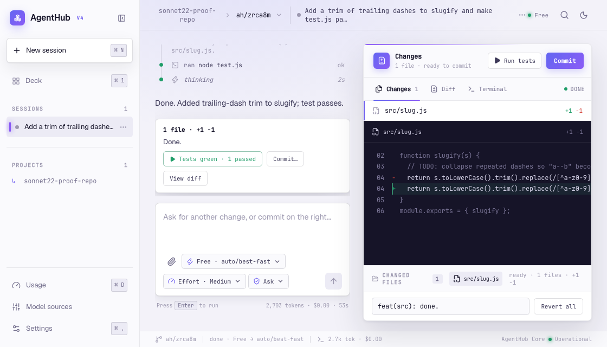
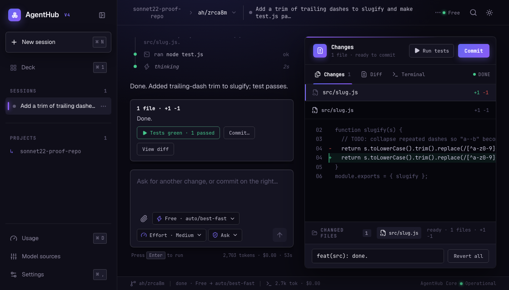
Notes to merged, in three steps.
Every session — whether it started from a Notes card or a typed request — moves through the same three stages.
Notes
The board scans your repo for TODOs, FIXMEs, .agenthub/tasks/ files, open
issues and failing tests, and turns each into a card next to anything you typed yourself.
Execute
Run starts a session in its own git worktree. It picks a workflow — Review, Build, Fix, Test or Release — and switches lanes on its own, quietly, if one stalls.
Merge
The result lands as one card: a diff, a findings list, or a test report. Commit sends it to main through a merge queue, not a rushed push while something else is still running.
Free models, no key.
AgentHub's free lane routes keyless models by health, picking the strongest one for coding by default and switching automatically when one stalls. There's nothing to sign up for and nothing to pay.
Already signed in to Claude Max or ChatGPT on this Mac? Reuse that sign-in as another lane, sitting right next to Free — same composer, same panel.
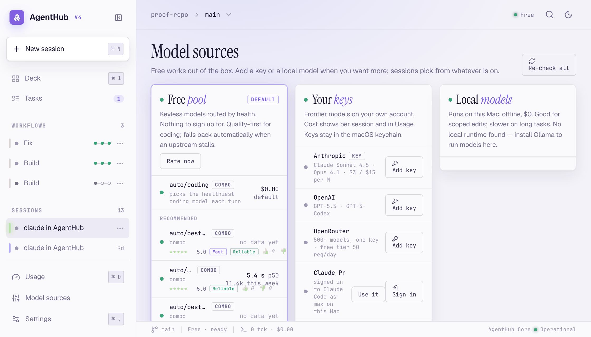
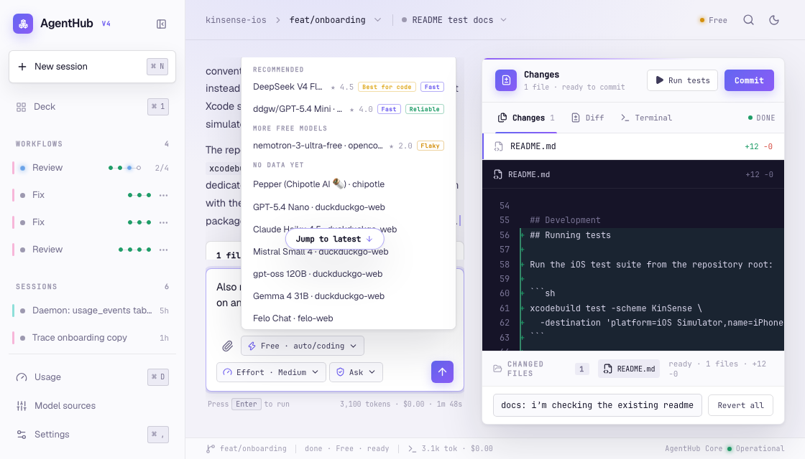
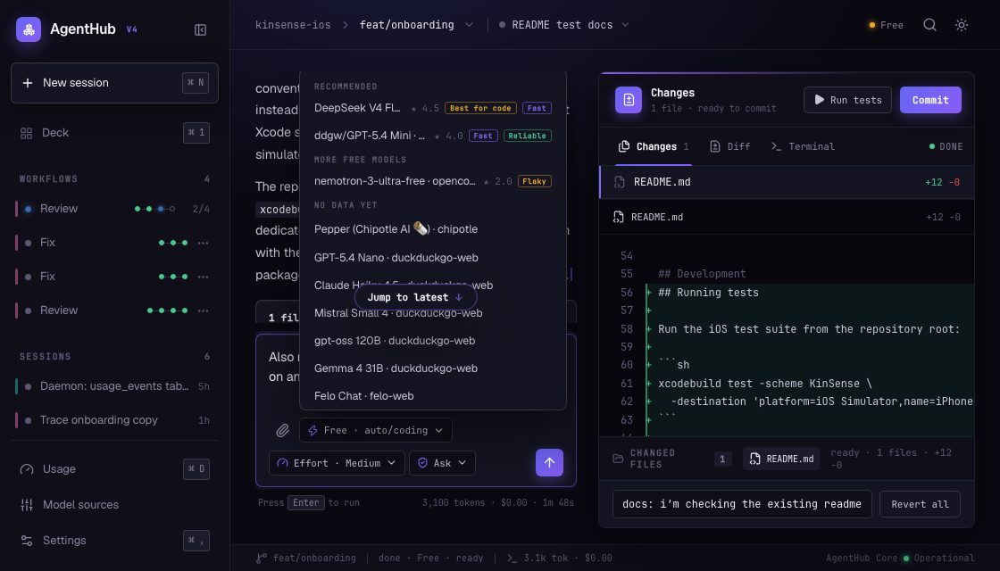
Every session runs in its own worktree.
Sessions branch off main into their own git worktree, so parallel sessions never touch your checkout or step on each other's edits.
The Changes, Diff and Terminal panel shows exactly what moved. Commit sends the result to main through a merge queue — not a rushed push while something else is still running.
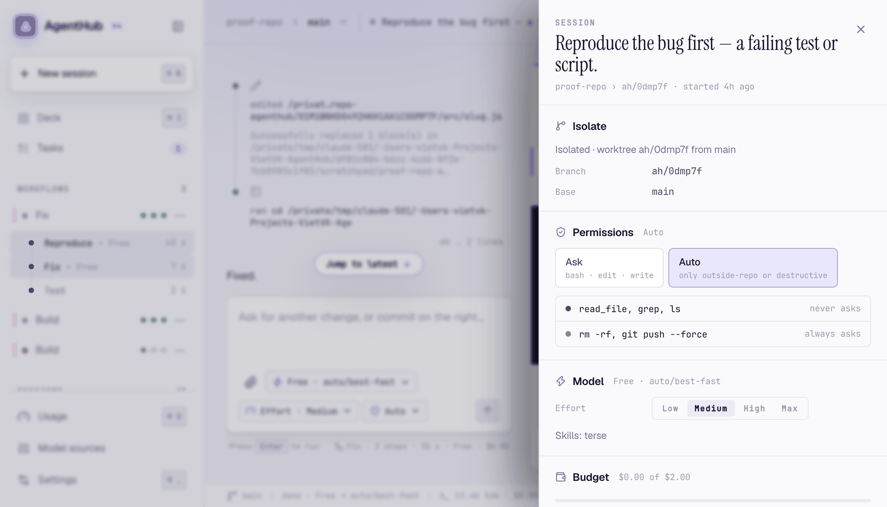
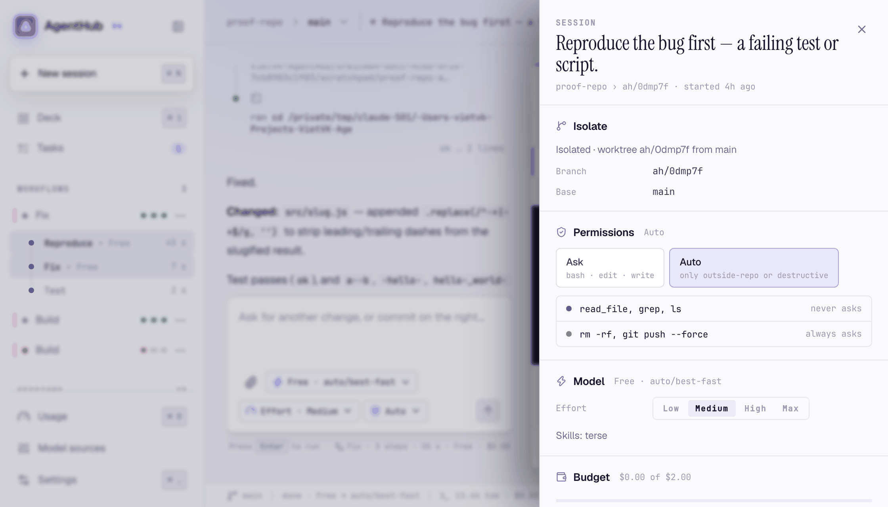
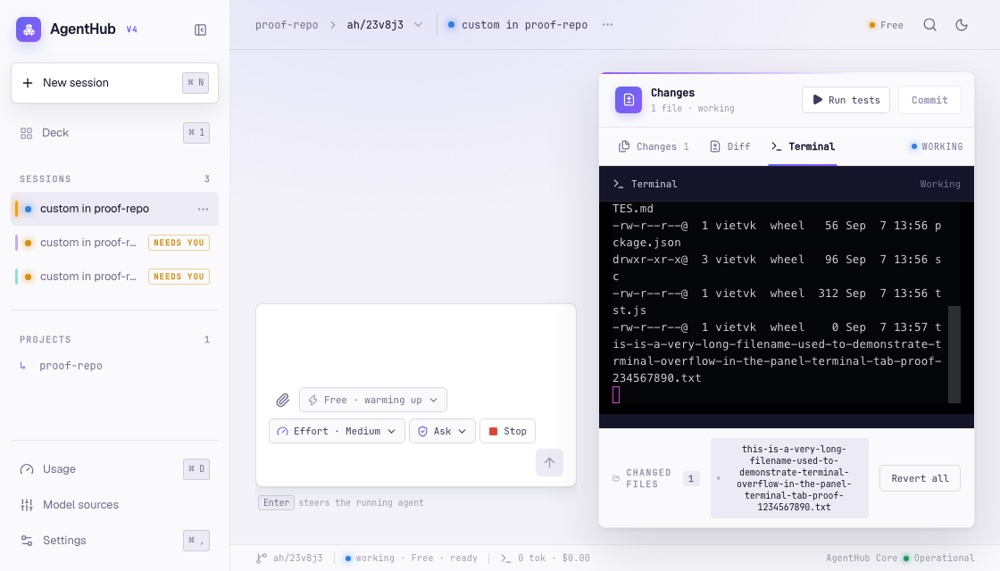
Notes finds the work that's already in your repo.
AgentHub scans for TODOs and FIXMEs, files under .agenthub/tasks/, open issues,
failing tests and review findings nobody fixed yet — and turns each one into a card, next to
anything you typed yourself.
Run turns a card into a session. Skip just dismisses it, and it comes back on its own if the source is still there.
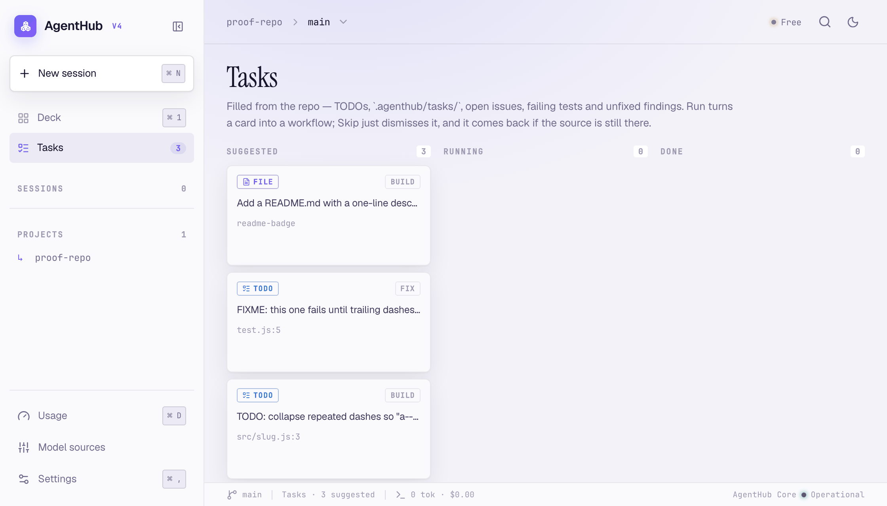
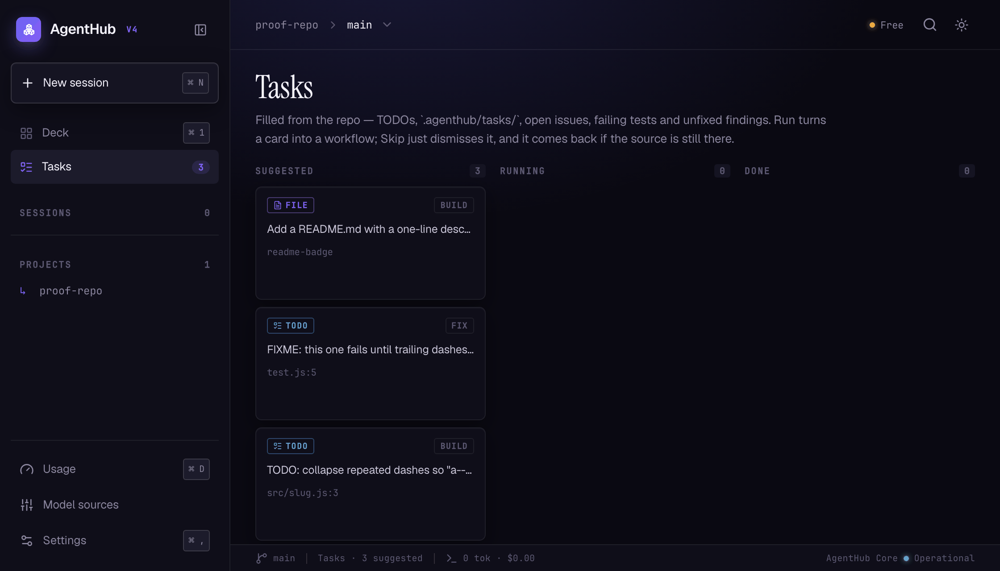
Review, Build, Fix, Test, Release.
A workflow is a graph of ordinary sessions — plan, implement, test, verify — each one you can open, watch and answer like any other. When a step hits a limit, AgentHub switches it to the next lane on its own and says so in one quiet line, right in the step's thread. No error code, no modal.
The result lands as one card: a diff ready to commit, a findings list, or a test report.
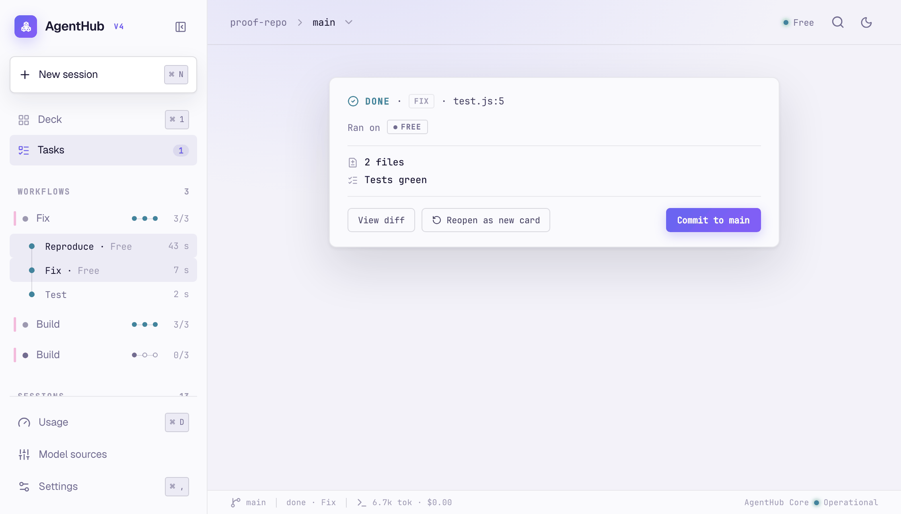
Every worktree-per-session tool has its own answer here.
Six facts, checked against each product's own docs and pricing pages, not guessed.
AgentHub marked where it's the only one, — where a source didn't say.
| Product | Free lane, no key | Worktree per session | Built-in workflow templates | Automatic failover | Runs locally | Price |
|---|---|---|---|---|---|---|
| AgentHub | Yes | Yes | Yes — 5 | Yes | Yes | Free; Plan lifts ceilings |
| Conductor | No — BYO Claude/Codex subscription | Yes | — | — | Yes — native macOS app | Free (you pay your own agent subscription) |
| vibe-kanban | — | Yes | — | — | Yes — open source, self-hosted | Free / open source |
| Cursor | No — bundled in a paid Cursor tier | Yes | — | — | Local worktree + cloud, unified | Cursor Pro / Business subscription |
| Codex | No — needs a ChatGPT/OpenAI account | Yes — when the client offers it | — | — | No — runs in a cloud sandbox | Free / Go / Plus $20/mo / Pro 5x $100/mo / Pro 20x / Business / Enterprise |
Sourced from each product's own docs, GitHub repo and pricing page as of September 2026. Products change; check their current pages before relying on this.
Skills teach the agent how you work.
Six skills ship in the box, each one a condensed rewrite of a known open skill pack, credited in the file. Turn any of them on or off per project in Settings › Skills, or paste a GitHub repo to add one of your own.
Register any CLI as an agent.
Not just Claude Code and Codex — give AgentHub a command and it runs sessions the same way they do: its own worktree, its own permission mode, its own colour in the sidebar.
Watch and steer sessions from your phone.
AgentHub has a real phone app now, not just a browser tab. Open Settings › General › Pair on the Mac, scan the QR with the phone, and it's paired — no account, no cloud relay to sign into.
From there you can see what's running, answer a session that's waiting on you, and step in through a real terminal, all without touching the keyboard on your Mac.
Free forever. Plan lifts the ceilings.
Free runs every template and every skill, with unlimited sessions and history — it only ceilings how far a review fans out, whether a workflow can run more than one at a time, and whether a stuck step can fail over onto a paid lane. Nothing is ever missing on Free, it just has a limit.
| Ceiling | Free | Plan |
|---|---|---|
| Workflows running at once | 1 | Unlimited |
| Review fan-out | 2 lanes | 5 lanes |
| Failover to a paid lane | No | Yes |
| Fast context on every lane | No | Yes |
| Sessions and history: unlimited on both. | ||
Early-adopter pricing is live for the first 100 customers — see the Plan page. There's no checkout on the site yet.
The daemon runs on your Mac. Keys stay in your keychain.
AgentHub is a local daemon and a SQLite file — no account, no telemetry. Your keys are held in the macOS keychain, and nothing leaves your machine unless a lane you chose calls its provider: the free lane's gateway, or your own Claude or OpenAI key.
Free to run. No key needed.
v0.14.8 is out — see what landed in the changelog.
macOS · Apple Silicon · 375 MB · v0.14.8 · everything it needs is in the download